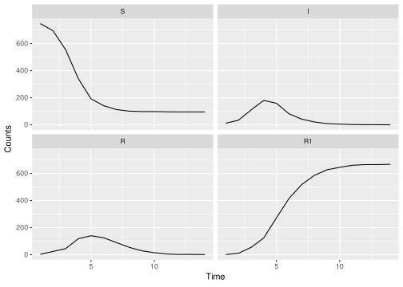

2 Set up simple simulation model
This chapter is to illustrate how to use mparseRcpp to simulate from a simple epidemic model. To start with we introduce a simple case study system. Before we do that, load the SimBIID and outbreaks packages (the latter containing the data).
2.1 Case Study
To illustrate some of these ideas we will use a case study of influenza in a boarding school. These data are from a paper in the BMJ in 1978 (Anonymous 1978) and provided in the outbreaks R package. We use a simple \(SIRR_1\) model with two removal classes, \(R\) and \(R_1\). We will assume that the bed-rest counts in the data correspond to the number of individuals in the \(R\) class, and will ignore the other time-series for the time being. This has been used various times in the literature, including Murray (2003), de Vries et al. (2006) and in some of the pomp tutorials. The stochastic model we will use has event probabilities:
\[\begin{align*}
P\left[S_{t + \delta t} = S_t - 1, I_{t + \delta t} = I_t + 1\right] &\approx \beta S I / N\\
P\left[I_{t + \delta t} = I_t - 1, R_{t + \delta t} = R_t + 1\right] &\approx \gamma I\\
P\left[R_{t + \delta t} = R_t - 1, R_{1, t + \delta t} = R_{1,t} + 1\right] &\approx \gamma_1 R
\end{align*}\]
The initial population size is 763 pupils, and we assume an initial introduction of infection of a single individual at day 0.

2.2 Set up simulation model
To set up the model above we need a character vector of transition rates:
## set up transition rates
transitions <- c(
"S -> beta * S * I / (S + I + R + R1) -> I",
"I -> gamma * I -> R",
"R -> gamma1 * R -> R1"
)We also need a vector of compartment names and parameter names:
## set compartment and parameter names
compartments <- c("S", "I", "R", "R1")
pars <- c("beta", "gamma", "gamma1")We then build a model using the mparseRcpp():
## parse model
model <- mparseRcpp(
transitions = transitions,
compartments = compartments,
pars = pars
)If you wish to, you can view the parsed
Rcppsource code by simply printing the object e.g.model
The SimBIID package provides a run() method to run individual or multiple simulations from the model. By default the mparseRcpp creates a function that takes four arguments:
pars: a vector of parameter values;tstart: the time to begin the simulation;tstop: the time to end the simulation;u: states of the system attstart.
We can then pass this object to the run() method, along with the corresponding arguments e.g.
## define parameters
simPars <- c(beta = 2.5, gamma = 1, gamma1 = 1)
## define initial states
iniStates <- c(S = 762, I = 1, R = 0, R1 = 0)
## run model
sims <- run(
model = model,
pars = simPars,
tstart = 0,
tstop = 15,
u = iniStates
)
sims## 'SimBIID_runs' object with n = 1 replicates.
##
## Output at final time point:
## # A tibble: 1 x 6
## completed t S I R R1
## <dbl> <dbl> <dbl> <dbl> <dbl> <dbl>
## 1 1 13.7 75 0 0 688Currently this outputs a tibble object (essentially a data.frame), with columns: completed / t / u*, where completed is a binary variable containing the value 1 if the epidemic finished before time point tstop, and 0 otherwise. Then the value t is the time point when the epidemic finished (or tstop if the epidemic was still ongoing when the function exited), and I’m using u* generically to correspond to a copy of the states of the system at the final time point (here \(S\), \(I\), \(R\) and \(R_1\)).
Here we can see that the simulation finished at time point t = 13.73, with the final state of the system given by c(S = 75, I = 0, R = 0, R1 = 688).
2.3 Using tspan
Alternatively, we may want to return the states of the system at a series of pre-determined points. We can do this by adding a tspan argument, which is a vector of time points at which we wish to return the states. We initialise the model by telling mparseRcpp that we wish to include a tspan argument e.g.
## parse model
model <- mparseRcpp(
transitions = transitions,
compartments = compartments,
pars = pars,
tspan = T
)When we run() the model, we can enter a suitable tspan argument as a vector of time points at which we wish to return the states e.g.
## run model
sims <- run(
model = model,
pars = simPars,
tstart = 0,
tstop = 15,
u = iniStates,
tspan = 1:14
)
sims## 'SimBIID_runs' object with n = 1 replicates.
##
## Output at final time point:
## # A tibble: 1 x 6
## completed t S I R R1
## <dbl> <dbl> <dbl> <dbl> <dbl> <dbl>
## 1 0 15 95 0 1 667
##
## Time-series counts:
## # A tibble: 14 x 5
## t S I R R1
## <dbl> <dbl> <dbl> <dbl> <dbl>
## 1 1 747 12 3 1
## 2 2 694 34 24 11
## 3 3 554 110 45 54
## 4 4 341 180 118 124
## 5 5 192 159 140 272
## 6 6 141 81 125 416
## 7 7 113 42 90 518
## 8 8 101 21 55 586
## 9 9 98 9 29 627
## 10 10 98 5 15 645
## 11 11 96 2 5 660
## 12 12 95 1 2 665
## 13 13 95 1 2 665
## 14 14 95 0 1 667Here we can see that the epidemic was still going at time point t = 15.
2.4 Plotting simulations
The run() method outputs a SimBIID_runs object, which can be plotted using the plot() function:

2.5 Running multiple simulations
We can run multiple simulations by passing a nrep argument to run(). For example, to run 100 replicates and plot them:
## run model
sims <- run(
model = model,
pars = simPars,
tstart = 0,
tstop = 15,
u = iniStates,
tspan = 1:14,
nrep = 100
)## 'SimBIID_runs' object with n = 100 replicates.
##
## Summaries of outputs at final time point:
## completed t S I
## Min. :0.00 Min. : 0.06443 Min. : 53.0 Min. :0.00
## 1st Qu.:0.00 1st Qu.: 2.22615 1st Qu.: 77.0 1st Qu.:0.00
## Median :1.00 Median :13.91501 Median : 93.0 Median :0.00
## Mean :0.63 Mean : 9.83262 Mean :332.7 Mean :0.29
## 3rd Qu.:1.00 3rd Qu.:15.00000 3rd Qu.:761.2 3rd Qu.:0.00
## Max. :1.00 Max. :15.00000 Max. :762.0 Max. :7.00
## R R1
## Min. : 0.00 Min. : 1.00
## 1st Qu.: 0.00 1st Qu.: 1.75
## Median : 0.00 Median :666.00
## Mean : 0.74 Mean :429.26
## 3rd Qu.: 1.00 3rd Qu.:684.00
## Max. :17.00 Max. :710.00## Warning: `cols` is now required.
## Please use `cols = c(value)`
Here the ribbons correspond to different prediction bands, and the red line is the posterior median. We can also add individual trajectories by inputing their replicate number, for example below we add the trajectories for replicates 1 and 2 to the plot.
## Warning: `cols` is now required.
## Please use `cols = c(value)`
There is an argument in run() to enable parallel processing if required (if the parallel package is installed). See help file for run() (e.g. ?run) for more details.
References
Anonymous. 1978. “Influenza in a Boarding School.” British Medical Journal 1: 578.
de Vries, Gerda, Thomas Hillen, Mark Lewis, Johannes Mueller, and Birgitt Schöenfisch. 2006. A Course in Mathematical Biology: Quantitative Modeling with Mathematical and Computational Methods. Society for Industrial; Applied Mathematics.
Murray, J.D. 2003. AMathematical Biology I - an Introduction. 3rd ed. Springer.